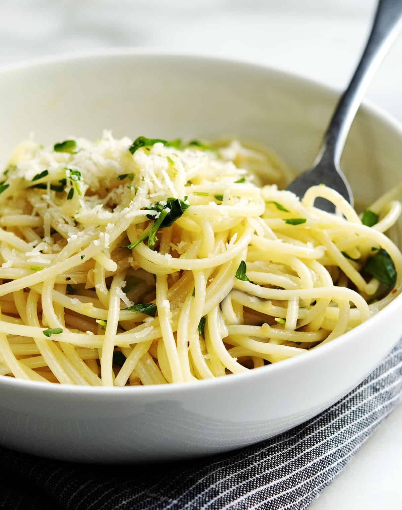

Lemon Garlic Pasta

Description
A light, bright pasta recipe that is rich and with a vivid lemon flavor.
Ingredients
- 12 ounces dried spaghetti
- 3 tablespoons olive oil
- 2 tablespoons butter
- 5 large garlic gloves minced
- 1/4 teaspoon crushed red pepper flakes
- 1 large lemon
- 1/3 cup choppped fresh parsley
- kosher salt and fresh ground black pepper to taste
- 2 ounces parmesan cheese
Preparation
- Bring a large pot of salted water to boil. Cook spaghetti until firm to the bite (al dente), about 8 minutes. Drain, reserving 1 cup of pasta water.
- Meanwhile, heat olive oil and butter in a large skillet over medium heat until sizzling. Add minced garlic and red pepper flakes; cook and stir until fragrant, about 30 seconds. Remove from heat.
- Once you've drained the pasta, set skillet with the garlic mixture over medium heat. Add drained, cooked pasta and 1/4 cup of reserved pasta water; toss to coat. Cook and stir until heated through, adding more pasta water if pasta seems too dry.
- Remove pasta from heat and stir in lemon zest and juice, and parsley. Season to taste with salt and pepper. Transfer to serving bowl or platter; top with grated parmesan cheese and serve.
Notes
- Use any long, slender pasta yout like for this recipe.
Home